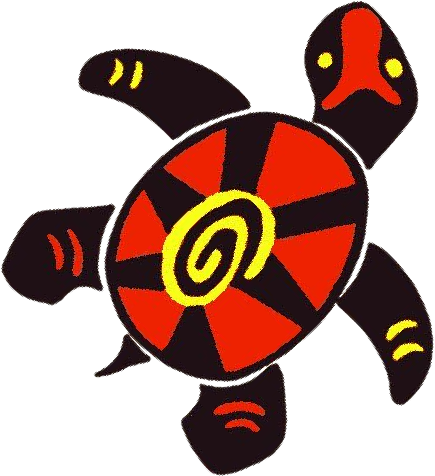

Presenting Gabriel Quinn . . .
in the new movie trailer highlighting character Gabriel Quinn from The Back of the Turtle.
produced by a collaboration effort between Ajai, Tommy and Matthew.
 Starring...
Starring...
Starring...
- Ajai as:
Nichloas Crisp
Director
Producer
- Matthew as:
Gabriel Quinn
- Tommy as:
Dorian Asher
Mara
Featuring . . .
- Character Highlights
-
Correlations between the book and Gabriel
with the real world
Enjoy!
🙄😳😬
🧐 Brief overview of our process 🤓
We had a limited amount of time in general but we made the most of it.
- Starting by brainstorming and making together a timeline for the video.
- We then started searching and compiling together various clips for Ajai to put together into the video
- I, (Tommy) worked on the website mainly myself at home
- After school on Monday, we allocated some time to film some scenes together